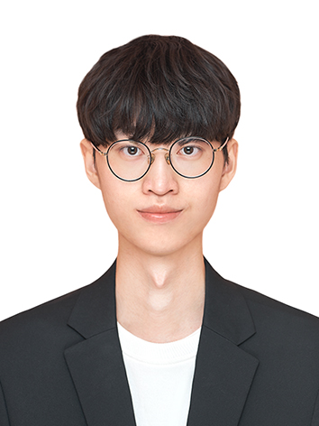

김태민 (Tae-Min Kim)
M.S Student in Electronic Engineering at Yeungnam University
Research Area: Digital Image Processing, Computer Vision, Display Field Communication
안녕하세요! 저는 전자공학 분야에서 디지털 이미지 처리와 컴퓨터 비전을 응용한
DFC 및 OCC 기술을 연구 중인 석사 과정 학생입니다.
Hello! I am a master's student researching DFC and OCC technologies
by applying digital image processing and computer vision in the field of electronic engineering.
⚒️ Skill
Python
OpenCV
C++
Android Studio
MATLAB
🎓 Degree
B.S. Yeungnam University
Dept. of Electronic Engineering (2017.03 - 2023.02)
M.S. Yeungnam University
Dept. of Electronic Engineering (2023.03 - Current)
📝 International Conference Paper
📝 Korea Conference Paper
[Poster Session] 보색관계를 이용한 color barcode 기술 실험
박언지,김유정,김태민 ,정성윤* (한국통신학회 동계종합학술발표회, 2020.02)
[Poster Session] 해상 풍력 발전기 안전관리를 위한 UAV 활용 방안
김민진,김유정,김수진,김태민 ,정성윤* (한국통신학회 동계종합학술발표회, 2023.02)
[Poster Session] 2차원 디스플레이 기반 통신 (DFC)을 위한 데이터 임베딩 기법 연구
김태민 ,이대규,정성윤* (대한전자공학회 하계학술대회, 2023.06)
[Poster Session] 풍력 발전기에서 UAV 를 이용한 광 카메라 통신(OCC) 가상 환경 연구
김태민 ,김주현,정성윤* (한국통신학회 동계종합학술발표회, 2024.02)
🌍 Activities
[산학협력 프로젝트] 디스플레이 기반 통신 원천 기술
LINC 3.0 사업단 산학 공동 과제 개발
연구원 참여
(2023.06 - 2023.11)
[현대 자동차 & 현대 NGV] V2X를 위한 광카메라통신 (V2X-OCC) 기술 트렌드 리포팅
차량용 OCC 통신 기술 자료 조사/리포팅 자료 제작 담당
(2024.09 - 2024.10)
[예비 창업] 2024 경산 창업 네트워크 예비 창업팀(영남대)
StegaVision
DFC 디지털 신분증
기술 지원 팀원 참여
(2024.06 - 2024.12)
[예비 창업] 2024 창업 유망주 300+(대경강원권)
미스틱링크
가상 IPO 기업 공개
교육부, 한국연구재단(NRF) 주관
디스플레이-카메라 간 무선 통신을 이용한 디지털 신분증
기술 지원 팀원 참여 (2024.07 - 2024.10)
[예비 창업] 2024 YUnicorn ESG창업경진대회
StegaVision
DFC 디지털 신분결제 시스템
창업 아디이어/IR 자료 담당
(2024.07 - 2024.08)
[예비 창업] 2024 G-Star Pitchday 3차 예선 및 본선
미스틱링크
경북창조경제혁신센터 주관
디스플레이-카메라 간 무선 통신을 이용한 디지털 신분증
창업 아디이어/IR 자료 담당
(3차 예선: 2024.08.23, 본선:2024.09.10)
[예비 창업] 2024 G-Star Pitchday Boost-Up 캠프 본선 (24팀)
미스틱링크
대구창조경제혁신센터, 경북창조경제혁신센터 공동 주관
디스플레이-카메라 간 무선 통신을 이용한 디지털 신분증
창업 아디이어/IR 자료 담당
(2024.09.04)
[공모전 & 창업 아이템] 2024 코드게이트 글로벌 AI 아이디어랩 공모전
본선(10팀)
미스틱링크
코드게이트 주관
AI 기술로 보안성을 강화한 디지털 히든 워터마킹
창업 아디이어/본선 발표
(2024.08.29)
🏆 Awards
[IR 피칭] 2024 YUnicorn ESG 창업경진대회
대상
StegaVision
창업 아이디어/IR 자료 담당 (2024.07 - 2024.08)
[IR 피칭] 2024 G-Star Pitchday 3차 예선
3차 예선 장려상 & 본선 진출
미스틱링크
창업 아디이어/IR 자료 담당
(3차 예선: 2024.08.23, 본선:2024.09.10)


 YU Ubiquitous Comm. Lab (2019.03 - 2020.02)
YU Ubiquitous Comm. Lab (2019.03 - 2020.02)